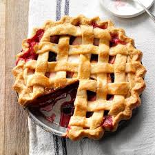

INGREDIENTS
- 1/3 cup packed light brown sugar
- 1/3 cup white sugar
- 1 tablespoon all-purpose flour
- 1 teaspoon lemon juice
- 1/3 teaspoon ground cinnamon
- 7 1/2 cups peeled, cored and sliced apples
- 1 cup raisins
- 1 recipe pastry for a 9 inch double crust pie

INSTRUCTIONS
- Preheat oven 425 degrees F (220 degrees C).
- Spray deep dish pie plate with cooking spray
- ombine white sugar, light brown sugar, flour, lemon, cinnamon, and mix well.
- Add apples and raisins to sugar mixture; stir until fruit is well coated.
- Spoon apple mixture into pie crust.
- Place second piecrust on top of filling, and trim edges.
- Lightly glaze top of pie with a beaten egg, then sprinkled with a little sugar.
- Bake till golden brown, about 35 to 40 minutes. Place on a wire rack, and cool 30 minutes.